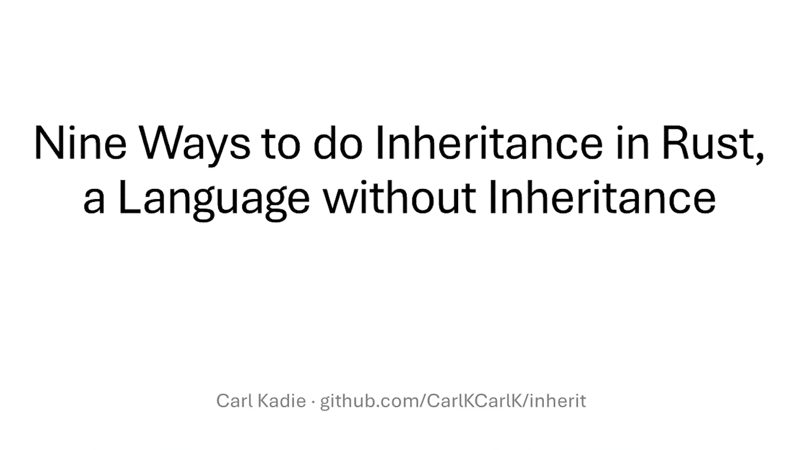
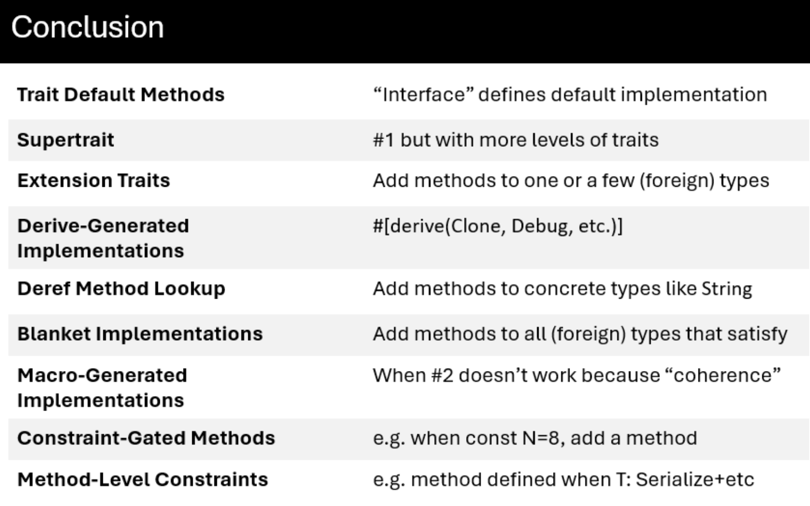

classDiagram
direction TB
class Integer {
<<abstract class>>
+min_value() Self // required
+max_value() Self // required
+exhausted_range() RangeInclusive~Self~ // code
}
class u8 {
<<concrete class>>
+min_value() Self
+max_value() Self
+exhausted_range() RangeInclusive~Self~ // inherited
}
class i16 {
<<concrete class>>
+min_value() Self
+max_value() Self
+exhausted_range() RangeInclusive~Self~ // inherited
}
Integer <|-- u8 : is-a
Integer <|-- i16 : is-a

After watching Carl Kadie’s excellent talk Nine Ways to do Inheritance in Rust, a Language without Inheritance, I decided to write down some notes from his work.
To be clear, all of the ideas and code presented here come from Carl Kadie. You can find the original material in the accompanying GitHub repository. My role here is simply that of a note-taker, with added commentary to help my future self (and perhaps others) revisit these concepts more easily.
Puzzle 1: Trait Default Methods
RangeSetBlaze works with sets of integers such as u8, i16, and other integer types. Each integer type must provide fundamental operations like min_value() and max_value(). At the same time, we want all integer types to share additional behavior, such as an exhausted_range() method.
In Rust, traits are often thought of as contracts: they define a set of required methods that implementors must provide. In that sense, a trait specifies what functionality a type must have.
However, traits can do more than define interfaces. They can also provide concrete method implementations. When a trait includes such methods, all implementors automatically gain access to them unless they choose to override the default behavior. This gives us something conceptually similar to inheritance: shared behavior defined once and reused across multiple types.
TipTrait Default Methods — Code
use std::ops::RangeInclusive;
// TECHNIQUE NAME: Trait Default Methods.
trait Integer: Copy + Ord {
fn min_value() -> Self;
fn max_value() -> Self;
// Default behavior inherited by implementors.
// Any impl can override this method.
/// Returns an exhausted (empty) range`.
fn exhausted_range() -> RangeInclusive<Self> {
debug_assert!(Self::min_value() < Self::max_value(), "Precondition");
Self::max_value()..=Self::min_value()
}
}
impl Integer for u8 {
fn min_value() -> Self {
u8::MIN
}
fn max_value() -> Self {
u8::MAX
}
}
impl Integer for i16 {
fn min_value() -> Self {
i16::MIN
}
fn max_value() -> Self {
i16::MAX
}
}
fn main() {
let r1 = u8::exhausted_range();
let r2 = i16::exhausted_range();
assert_eq!(r1, 255..=0);
assert!(r2.is_empty());
}
// TECHNIQUE NAME (again): Trait Default Methods.The key idea is that
u8andi16only need to implement the required methods,min_value()andmax_value(). Theexhausted_range()method is defined once in the trait and automatically shared by all implementors.
Puzzle 2: Supertrait
A servo is an electric motor that can move to a specified angle. We want a ServoEsp (our type that controls a servo on an ESP32 microcontroller) to work with any code that needs a servo. A ServoPlayerEsp is similar, but with animation ability. (Inspired by device-envoy.)
classDiagram
direction TB
class Servo {
<<abstract class>>
+set_degrees(degrees)
}
class ServoPlayer {
<<abstract class>>
+set_degrees(degrees) // from Servo
+animate(steps)
}
class ServoEsp {
<<concrete class>>
+set_degrees(degrees)
}
class ServoPlayerEsp {
<<concrete class>>
+set_degrees(degrees)
+animate(steps)
}
Servo <|-- ServoPlayer : is-a
Servo <|-- ServoEsp : is-a
ServoPlayer <|-- ServoPlayerEsp : is-a
In Rust, a trait can depend on another trait. The syntax trait B: A means that B requires A as a prerequisite. In other words, any type that implements B must also implement A.
This is similar to saying that B extends A: anything that works with A will also work with B, but B provides additional functionality on top.
In traditional object-oriented terms, this feels like an “is-a” relationship where B can do everything A can do, plus more, while still being treated as an A when needed.
TipSupertrait — Code
use std::thread;
use std::time::Duration;
// `Servo` is an abstract class (a trait), not a concrete driver.
trait Servo {
fn set_degrees(&self, degrees: u16);
}
// `ServoPlayer` is also abstract. It extends `Servo` (supertrait), so any
// `ServoPlayer` can do everything in `Servo` plus animation.
// TECHNIQUE NAME: Supertraits
trait ServoPlayer: Servo {
// (degrees, milliseconds to hold at that angle)
fn animate(&self, steps: &[(u16, u64)]);
}
#[derive(Default)]
// Concrete servo driver (similar naming to the real example): `ServoEsp`.
struct ServoEsp;
impl Servo for ServoEsp {
fn set_degrees(&self, degrees: u16) {
println!("[ServoEsp] set angle -> {degrees}°");
}
}
#[derive(Default)]
// Concrete servo player driver that can animate.
struct ServoPlayerEsp;
impl Servo for ServoPlayerEsp {
fn set_degrees(&self, degrees: u16) {
println!("[ServoPlayerEsp] set angle -> {degrees}°");
}
}
impl ServoPlayer for ServoPlayerEsp {
fn animate(&self, steps: &[(u16, u64)]) {
for (degrees, ms) in steps {
self.set_degrees(*degrees);
println!("[ServoPlayerEsp] hold for {ms}ms");
thread::sleep(Duration::from_millis(*ms));
}
}
}
// Generic program that only needs a `Servo`.
fn center_servo(servo: &impl Servo) {
servo.set_degrees(90);
}
// Generic program that needs a `ServoPlayer`.
fn run_wave(player: &impl ServoPlayer) {
player.animate(&[
(0, 120),
(45, 100),
(90, 100),
(135, 100),
(180, 120),
(135, 100),
(90, 100),
(45, 100),
(0, 120),
]);
}
fn main() {
let servo_esp = ServoEsp::default();
let servo_player_esp = ServoPlayerEsp::default();
center_servo(&servo_esp);
// `ServoPlayer` can do everything `Servo` can!
center_servo(&servo_player_esp);
// and more.
run_wave(&servo_player_esp);
}The key idea is that
ServoPlayerbuilds on top ofServorather than replacing it. Any type that implementsServoPlayermust also implementServo, allowing it to be used wherever aServois expected while providing additional capabilities. Supertraits therefore offer a trait-based way to express “is-a” relationships and extend behavior incrementally.
Puzzle 3: Extension Traits
We want to add a new method is_odd() to an existing concrete type usize, that type is defined outside our crate (“foreign”).
classDiagram
direction TB
class UsizeExtensions {
<<abstract class>>
+is_odd() bool
}
class usize {
<<concrete class>>
+is_odd() bool // inherited
}
UsizeExtensions <|-- usize : is-a
For types that we define ourselves, such as structs and enums, we can add methods through an impl block. However, Rust does not allow us to write an inherent impl for a type defined in another crate, including primitive types like usize.
This restriction prevents different crates from attaching conflicting methods to the same type, which would make method resolution ambiguous.
Fortunately, traits provide a workaround. We can define our own trait, implement it for the foreign type, and thereby extend the type with new methods. From the caller’s perspective, these methods behave much like native methods on the type itself.
This pattern is known as extension traits.
TipExtension Traits — Code
// impl usize {
// fn is_odd(self) -> bool {
// self & 1 != 0
// }
// }
// error[E0390]: cannot define inherent `impl` for primitive types
trait UsizeExtensions {
fn is_odd(self) -> bool;
}
impl UsizeExtensions for usize {
fn is_odd(self) -> bool {
self & 1 != 0
}
}
// TECHNIQUE NAME: extension traits.
fn main() {
let count: usize = 7;
assert!(count.is_odd());
assert!(!12.is_odd());
}The key idea is that
usize“inherits” theis_odd()method fromUsizeExtensions. Although we cannot add methods directly to the foreign type, implementing an extension trait gives us a very similar result from the caller’s perspective.
Puzzle 4: Derive-Generated Implementations
We want a small LedLevel enum type with two values (On, Off) that automatically participates in common behaviors (default value, debugging output, equality/order comparisons, hashing, copy/clone).
classDiagram
direction TB
class LedLevel {
<<concrete class>>
On
Off
}
class Defaultable {
<<abstract class>>
+default()
}
class Debuggable {
<<abstract class>>
+debug_string()
}
class EquatableOrdered {
<<abstract class>>
+equals(other)
+compare(other)
}
class Hashable {
<<abstract class>>
+hash()
}
class CopyableCloneable {
<<abstract class>>
+copy()
+clone()
}
Defaultable <|-- LedLevel : is-a
Debuggable <|-- LedLevel : is-a
EquatableOrdered <|-- LedLevel : is-a
Hashable <|-- LedLevel : is-a
CopyableCloneable <|-- LedLevel : is-a
In Rust, the derive macro is a powerful convenience feature. It allows us to automatically generate implementations for many common traits, saving us from writing repetitive boilerplate code. These derived traits often provide essential functionality such as formatting, comparison, hashing, and cloning.
Beyond the standard library, many third-party crates also extend this idea. Libraries like serde, for example, provide derive support for serialization and deserialization traits, making it easy to integrate types with external systems.
TipDerive-Generated Implementations — Code
// TECHNIQUE NAME: derive-generated implementation
#[derive(Clone, Copy, Debug, Eq, Hash, Ord, PartialEq, PartialOrd, Default)]
enum LedLevel {
On,
#[default]
Off,
}
fn main() {
let default_level = LedLevel::default();
let on = LedLevel::On;
let off = LedLevel::Off;
assert_eq!(default_level, LedLevel::Off);
assert_ne!(on, off);
assert!(off > on);
// `Copy` + `Clone` come from derive too.
let copied = on;
let cloned = off.clone();
assert_eq!(copied, on);
assert_eq!(cloned, off);
}The key idea is that a tiny enum like
LedLevelcan immediately behave like a fully featured type—supporting comparison, copying, hashing, and defaults—simply by attaching#[derive(...)], without writing any manual implementation code.
Puzzle 5: Deref Method Lookup
We want an HtmlBuffer to feel like a string for everyday method calls, while still being its own distinct type. Note that String is a concrete type with storage, not just an interface/trait/abstract class.
classDiagram
direction TB
class String {
<<concrete class>>
-bytes
+push_str()
+len()
+as_bytes()
}
class HtmlBuffer {
<<concrete class>>
+new()
+push_str() // inherited
+len() // inherited
+as_bytes() // inherited
}
String <|-- HtmlBuffer : is-a
The Deref trait allows a type to specify what it should dereference into. This enables a powerful feature in Rust: method lookup through deref coercion.
When a method is not found on the original type, Rust will automatically try to dereference the value and search again on the target type. This process can repeat multiple times, meaning deref behavior can be chained across multiple wrapper types.
For example, a value like Box<String> does not implement contains() directly. However, Rust will first dereference the Box<String> into String, and then continue method lookup on String. Since String itself derefs into str, the call can continue one more step until contains() is found. As a result, a method call like the following works even though contains is defined on str:
fn main() {
let s = Box::new(String::from("hello world"));
assert!(s.contains("world"));
}
TipDeref Method Lookup — Code
// struct HtmlBuffer;
// impl String for HtmlBuffer {
// }
// Error because String is not a trait.
use std::ops::{Deref, DerefMut};
// HtmlBuffer 'wraps' a String
struct HtmlBuffer(String);
impl HtmlBuffer {
fn new() -> Self {
Self(String::new())
}
}
impl Deref for HtmlBuffer {
type Target = String;
fn deref(&self) -> &Self::Target {
&self.0
}
}
impl DerefMut for HtmlBuffer {
fn deref_mut(&mut self) -> &mut Self::Target {
&mut self.0
}
}
// TECHNIQUE NAME: deref lookup.
fn main() {
let mut page = HtmlBuffer::new();
// `push_str` and `len` are String methods found via deref lookup.
page.push_str("<h1>Hello</h1>");
page.push_str("<p>Rust</p>");
assert_eq!(page.len(), 25);
// Borrow the thing `page` points to and compare.
assert_eq!(&*page, "<h1>Hello</h1><p>Rust</p>");
}
// Good for `Box`, `Rc`, etc., but not really good here.
// Also see AsRef, From, and Borrow traits.The key idea is that
HtmlBufferfeels like aStringeven though it is a wrapper type. ThroughDerefandDerefMut, method calls likelen()andpush_str()are automatically forwarded to the innerString. This makes the wrapper effectively transparent in everyday use, while still preserving its own distinct identity as a separate type.
Puzzle 6: Blanket Implementations
We want to union any number of sets (RangeSetBlaze<T>). In OO terms, any collection that is an iterable of RangeSetBlaze<T> references should inherit this operation.
WarningSlightly cleaner in my view
We want to union any number of sets (RangeSetBlaze). In OO terms, any collection that can be iterated as &RangeSetBlaze should inherit this operation.
classDiagram
direction TB
class Iterable {
<<abstract class>>
+iterator()
}
class RangeSetCollection {
<<abstract class>>
+iterator() // from Iterable
+union()
}
class VectorOfRangeSetRefs {
<<concrete class>>
+iterator()
+union() // inherited
}
class ArrayOfRangeSetRefs {
<<concrete class>>
+iterator()
+union() // inherited
}
class AnyOtherRangeSetCollection {
<<concrete class>>
+iterator()
+union() // inherited
}
Iterable <|-- RangeSetCollection : is-a
RangeSetCollection <|-- VectorOfRangeSetRefs : is-a
RangeSetCollection <|-- ArrayOfRangeSetRefs : is-a
RangeSetCollection <|-- AnyOtherRangeSetCollection : is-a
A blanket implementation allows a trait to be implemented for an entire category of types rather than for a single concrete type. Instead of writing many individual implementations, we can describe a set of requirements and automatically grant the trait to every type that satisfies them.
The requirements are typically expressed through trait bounds, often using a where clause. This lets us precisely control which types receive the implementation while keeping the code concise and reusable.
Like other generic features in Rust, blanket implementations are resolved at compile time. The compiler generates the necessary code for each applicable type, providing flexibility without introducing runtime overhead.
TipBlanket Implementations — Code
use std::collections::BTreeSet;
// For this example, use u64 as our stand-in integer type.
type Integer = u64;
// Mock up RangeSetBlaze as a BTreeSet wrapper for demo purposes.
#[derive(Debug, Clone, PartialEq, Eq)]
struct RangeSetBlaze {
values: BTreeSet<Integer>,
}
impl RangeSetBlaze {
fn new() -> Self {
Self {
values: BTreeSet::new(),
}
}
// Construct from a slice of Integer values.
fn from_slice(values: &[Integer]) -> Self {
Self {
values: values.iter().copied().collect(),
}
}
// Return a new set that is the union of two borrowed sets.
fn union(&self, other: &Self) -> Self {
Self {
values: self.values.union(&other.values).copied().collect(),
}
}
fn is_empty(&self) -> bool {
self.values.is_empty()
}
}
// A RangeSetCollection must be iterable over borrowed RangeSetBlaze values.
// In return, the trait gives it a union() method over those values.
trait RangeSetCollection<'a>: IntoIterator<Item = &'a RangeSetBlaze> {
fn union(self) -> RangeSetBlaze
where
Self: Sized,
{
let mut result = RangeSetBlaze::new();
for set in self {
result = RangeSetBlaze::union(&result, set);
}
result
}
}
// TECHNIQUE NAME: blanket implementation
//
// This is broader than a normal extension trait impl.
// Instead of adding union() to one type, we add it to every type
// that can be turned into an iterator over &RangeSetBlaze.
impl<'a, I> RangeSetCollection<'a> for I where I: IntoIterator<Item = &'a RangeSetBlaze> {}
fn main() {
let a = RangeSetBlaze::from_slice(&[1, 2, 3]);
let b = RangeSetBlaze::from_slice(&[3, 4, 5]);
let c = RangeSetBlaze::from_slice(&[5, 7, 9]);
let expected = RangeSetBlaze::from_slice(&[1, 2, 3, 4, 5, 7, 9]);
// A vector of sets can be unioned together.
assert_eq!(vec![&a, &b, &c].union(), expected);
// An array of sets can be unioned together.
assert_eq!([&a, &b, &c].union(), expected);
// A filtered option can be unioned.
assert_eq!(Some(&a).filter(|set| !set.is_empty()).union(), a);
}
Note
Option<T> implements IntoIterator
One interesting thing I learned from this example is that the final test works because Option<T> implements IntoIterator. As a result, Option<&RangeSetBlaze> becomes an iterator that yields either zero or one &RangeSetBlaze value. Since it satisfies the blanket implementation’s trait bound, the expression
Some(&a).filter(|set| !set.is_empty()).union()can call union() just like a vector or an array.
The key idea is that
union()is written only once, yet it automatically becomes available on many different collection types. In the example, a vector, an array, and even a filteredOptioncan all call the sameunion()method because they satisfy the required iterator constraint.
Puzzle 7: Macro-Generated Implementations
Treat 15 integer-like types uniformly: u8, …, usize, …i128, char, IPv4, IPv6
For example, with a min, max, and ability to add one (unchecked).
classDiagram
direction TB
class Integer {
<<abstract class>>
+add_one()
+min_value()
+max_value()
}
class NumericInteger {
<<abstract class>>
+add_one()
+min_value()
+max_value()
}
class IpInteger {
<<abstract class>>
+add_one()
+min_value()
+max_value()
}
class CharInteger {
<<abstract class>>
+add_one()
+min_value()
+max_value()
}
class u8 {
<<concrete class>>
+add_one() // inherited
+min_value() // inherited
+max_value() // inherited
}
class IPv4Type {
<<concrete class>>
+add_one() // inherited
+min_value() // inherited
+max_value() // inherited
}
class IPv6Type {
<<concrete class>>
+add_one() // inherited
+min_value() // inherited
+max_value() // inherited
}
class CharType {
<<concrete class>>
+add_one() // inherited
+min_value() // inherited
+max_value() // inherited
}
Integer <|-- NumericInteger : is-a
Integer <|-- IpInteger : is-a
Integer <|-- CharInteger : is-a
NumericInteger <|-- u8 : is-a
IpInteger <|-- IPv4Type : is-a
IpInteger <|-- IPv6Type : is-a
CharInteger <|-- CharType : is-a
In addition to procedural macros like derive, which take a token stream and transform it into another token stream, declarative macros (macro_rules!) can also generate code — including full method implementations.
The key difference here is that instead of manually writing nearly identical impl blocks for each type, we encode the shared logic once and reuse it across all implementations via macros. This significantly reduces repetition while keeping the specialization for each type explicit where needed.
TipMacro-Generated Implementations — Code
use std::net::{Ipv4Addr, Ipv6Addr};
trait Integer: Copy + Ord {
fn add_one(self) -> Self;
fn min_value() -> Self;
fn max_value() -> Self;
}
macro_rules! impl_integer_ops_num {
($t:ty) => {
fn add_one(self) -> Self {
self + 1
}
fn min_value() -> Self {
<$t>::MIN
}
fn max_value() -> Self {
<$t>::MAX
}
};
}
macro_rules! impl_integer_ops_ip {
($ip_type:ty, $representation_type:ty) => {
fn add_one(self) -> Self {
<$ip_type>::from(<$representation_type>::from(self) + 1)
}
fn min_value() -> Self {
<$ip_type>::from(<$representation_type>::MIN)
}
fn max_value() -> Self {
<$ip_type>::from(<$representation_type>::MAX)
}
};
}
macro_rules! impl_integer_ops_char {
() => {
fn add_one(self) -> Self {
let mut num = u32::from(self) + 1;
if num == 0xD800 {
num = 0xE000;
}
char::from_u32(num).expect("next char must be a valid Unicode scalar value")
}
fn min_value() -> Self {
char::MIN
}
fn max_value() -> Self {
char::MAX
}
};
}
impl Integer for i8 { impl_integer_ops_num!(i8); }
impl Integer for u8 { impl_integer_ops_num!(u8); }
impl Integer for i16 { impl_integer_ops_num!(i16); }
impl Integer for u16 { impl_integer_ops_num!(u16); }
impl Integer for i32 { impl_integer_ops_num!(i32); }
impl Integer for u32 { impl_integer_ops_num!(u32); }
impl Integer for i64 { impl_integer_ops_num!(i64); }
impl Integer for u64 { impl_integer_ops_num!(u64); }
impl Integer for i128 { impl_integer_ops_num!(i128); }
impl Integer for u128 { impl_integer_ops_num!(u128); }
impl Integer for isize { impl_integer_ops_num!(isize); }
impl Integer for usize { impl_integer_ops_num!(usize); }
impl Integer for Ipv4Addr { impl_integer_ops_ip!(Ipv4Addr, u32); }
impl Integer for Ipv6Addr { impl_integer_ops_ip!(Ipv6Addr, u128); }
impl Integer for char { impl_integer_ops_char!(); }
// Can't use num_traits::PrimInt as a 'subclass'
// because Rust worries that 'char' etc. might
// be added to it later (coherence).
// HOWEVER: You could define your own PrimInt with 12 impls.
// TECHNIQUE NAME: macro-generated implementation.
fn main() {
let x: u8 = 254;
assert_eq!(x.add_one(), 255);
assert_eq!('a'.add_one(), 'b');
assert_eq!(char::min_value(), char::MIN);
assert_eq!(char::max_value(), char::MAX);
assert_eq!(Ipv4Addr::min_value(), Ipv4Addr::new(0, 0, 0, 0));
assert_eq!(Ipv4Addr::max_value(), Ipv4Addr::new(255, 255, 255, 255));
}The key idea is that macros let us scale a single abstraction (
Integer) across many unrelated types by generating repetitiveimplblocks automatically, while still allowing special-case logic (likecharand IP addresses) where needed.
Puzzle 8: Constraint-Gated Methods
We have abstract class OutputArray<N> with two methods. For N = 8, however, we want one extra method because it maps cleanly to a u8 bitmask.
classDiagram
direction TB
class OutputArrayN["OutputArray~N~"] {
<<abstract class>>
+new()s
+set_level_at_index(index, level)
}
class OutputArray4["OutputArray~4~"] {
<<concrete class>>
+new() // inherited
+set_level_at_index(index, level) // inh.
}
class OutputArray8["OutputArray~8~"] {
<<concrete class>>
+new() // inherited
+set_level_at_index(index, level) // inh.
+set_from_bits(u8)
}
OutputArrayN <|-- OutputArray4 : is-a
OutputArrayN <|-- OutputArray8 : is-a
Rust allows methods to be conditionally attached to a type by placing them in separate impl blocks with additional constraints. These constraints can take many forms, including const generic values, trait bounds, lifetimes, or combinations of them.
As a result, a type’s API can vary depending on the compile-time properties it satisfies. Rather than exposing every method to every instance of a type, Rust allows certain methods to exist only when specific requirements are met.
TipConstraint-Gated Methods — Code
#[derive(Debug, Clone, Copy)]
struct OutputArray<const N: usize> {
levels: [bool; N],
}
impl<const N: usize> OutputArray<N> {
fn new() -> Self {
Self { levels: [false; N] }
}
fn set_level_at_index(&mut self, index: usize, level: bool) {
self.levels[index] = level;
}
}
// Hardcoded 8, matching the bit width expected by a u8 mask.
impl OutputArray<8> {
fn set_from_bits(&mut self, mut bits: u8) {
for slot in &mut self.levels {
*slot = (bits & 1) == 1;
bits >>= 1;
}
}
}
// TECHNIQUE NAME: constraint-gated methods.
// - Put methods in a separate impl block.
// - The methods exist only when the impl's constraints are met.
// - Constraints can be const values, trait bounds, lifetimes, or combinations
fn main() {
let mut any = OutputArray::<4>::new();
any.set_level_at_index(2, true);
let mut eight = OutputArray::<8>::new();
eight.set_from_bits(0b1011_0001);
assert_eq!(any.levels, [false, false, true, false]);
assert_eq!(eight.levels, [true, false, false, false, true, true, false, true]);
}
WarningNot a blanket implementation
At first glance, impl<const N: usize> OutputArray<N> may look similar to a blanket implementation. However, there is an important distinction: constraint-gated methods apply to a specific generic type, while blanket implementations apply a trait across a family of types.
The key idea is that method availability can depend on compile-time constraints. In this example, only
OutputArray<8>gains theset_from_bits()method, because only an 8-element output array can be represented directly by au8bitmask. The restriction is enforced entirely at compile time, making invalid usages impossible to compile.
Puzzle 9: Method-Level Constraints
We want two levels of FlashBlock: a top level with new and clear, and a constrained level that adds save and load only when T satisfies both serialization and deserialization capabilities.
classDiagram
direction TB
class Serialize {
<<abstract class>>
+serialize()
}
class Deserialize {
<<abstract class>>
+deserialize()
}
class TConstrained["T: Serialize + Deserialize"] {
<<abstract class>>
+serialize() // inherited
+deserialize() // inherited
}
class WifiCredentials {
<<concrete class>>
+serialize() // inherited
+deserialize() // inherited
}
class FlashBlock {
<<concrete class>>
+new()
+clear()
}
class FlashBlockForTSerializeDeserialize {
<<concrete class>>
+new() // inherited
+clear() // inherited
+save(value, key)
+load(key) T
}
Serialize <|-- TConstrained : is-a
Deserialize <|-- TConstrained : is-a
TConstrained <|-- WifiCredentials : is-a
FlashBlock <|-- FlashBlockForTSerializeDeserialize : is-a
Unlike constraint-gated methods, which apply bounds to an entire impl block, Rust allows constraints to be placed directly on individual methods via a where clause. This enables a type to remain generally usable while selectively enabling certain operations only when additional requirements are met.
TipMethod-Level Constraints — Code
use std::collections::HashMap;
use serde::de::DeserializeOwned;
use serde::{Deserialize, Serialize};
#[derive(Debug, Clone, Serialize, Deserialize, PartialEq, Eq)]
struct WifiCredentials {
ssid: String,
password: String,
}
/// Key point: method-level gating.
/// - The type exists for all use-cases.
/// - Only `save/load<T>` require extra capabilities on `T`.
#[derive(Default)]
struct FlashBlock {
store: HashMap<String, Vec<u8>>,
}
impl FlashBlock {
fn new() -> Self {
Self::default()
}
fn clear(&mut self) {
self.store.clear();
}
fn save<T>(&mut self, key: &str, value: &T) -> Result<(), postcard::Error>
where
T: Serialize + DeserializeOwned,
{
let bytes = postcard::to_stdvec(value)?;
self.store.insert(key.to_string(), bytes);
Ok(())
}
fn load<T>(&self, key: &str) -> Option<T>
where
T: Serialize + DeserializeOwned,
{
let bytes = self.store.get(key)?;
postcard::from_bytes(bytes).ok()
}
}
// TECHNIQUE NAME: method-level gating.
fn main() -> Result<(), postcard::Error> {
let mut flash = FlashBlock::new();
let credentials = WifiCredentials {
ssid: "HomeWiFi".to_string(),
password: "secret".to_string(),
};
// Works: WifiCredentials satisfies Serialize + Deserialize.
flash.save("wifi", &credentials)?;
let loaded: Option<WifiCredentials> = flash.load("wifi");
let loaded = loaded.unwrap();
assert_eq!(&loaded.ssid, "HomeWiFi");
assert_eq!(&loaded.password, "secret");
flash.clear();
assert!(flash.load::<WifiCredentials>("wifi").is_none());
// This compiles, but it asks for the wrong type.
// device-envoy stores type-identifying metadata with each value,
// so this kind of mismatch is likely to be caught at load time.
flash.save("number", &42u8)?;
let loaded: Option<String> = flash.load("number");
assert!(loaded.is_none());
Ok(())
}The key idea is that constraints can be attached to individual methods instead of the entire type. In this example, basic operations are always available on
FlashBlock, while storage-related operations are only enabled when the value type satisfies the required serialization and deserialization bounds. This keeps the core type simple while making advanced functionality conditional on capability.
Conclusion
Here is the conclusion table from Carl Kadie:

WarningDisclaimer
This post was drafted by me, with AI assistance to refine the content.